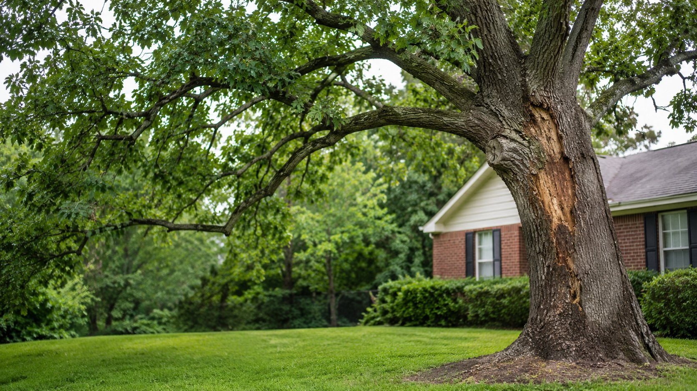

Unwanted tree removal
Discuss a tree you want removed from your yard or residential property and enquire about possible removal appointments.
Pine Bluff & nearby Arkansas communities
Unwanted, fallen or potentially dangerous tree on your property? Call to describe your tree removal needs and enquire about appointment options with independent local providers.
Independent referral service. We do not carry out tree work or guarantee availability.

Tree removal enquiries
Call about the removal of an entire tree, whether it is unwanted, has become damaged or is causing concern near your home. These are enquiry categories, not guaranteed contractor services.
Discuss a tree you want removed from your yard or residential property and enquire about possible removal appointments.
For a fallen, split or storm-damaged tree that needs to be removed, where a suitable provider is available.
Tell us about a tree close to a building, damaged or leaning, where you are looking to arrange its removal.
Simple next steps
We provide a telephone enquiry service and may help pass your request to an independent tree removal provider.
Tell us where the property is and whether the tree is unwanted, damaged, fallen or causing concern.
Let us know if you want to arrange an appointment and provide relevant access details.
Your details may be reviewed or sent to a suitable independent provider. Referral and appointment availability are not guaranteed.
Southeast Arkansas
This website is locally focused on Pine Bluff, White Hall and surrounding Jefferson County communities. Tell us your town or ZIP code when you call.
Local focus does not mean that a provider is available in every location. Marketcall campaign eligibility and buyer coverage may vary by ZIP code and time.
Ask About Tree RemovalPine Bluff
Arkansas
Tree removal appointment enquiries for homeowners in and around Jefferson County.
Ready to discuss removal?
Call to explain your tree removal needs and ask about possible local assistance.